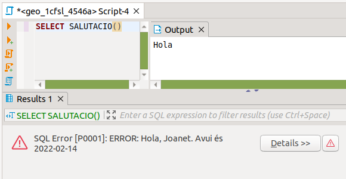

7. Missatges i excepcions
Al llarg dels exemples i exercicis que hem fet fins ara, ens ha vingut molt bé traure algun missatge, per veure com anava l'execució de les funcions. El que feem era provocar un aconteixement, en aquest cas una notícia, un avís. Podem utilitzar la mateixa sentència per a provocar també un error, amb el conseqüent avortament de l'execució de la funció. Anem a veure-ho amb més detall.
RAISE nivell 'format' [,variable1[,...]];
En nivell posarem un dels següents: DEBUG , LOG , INFO , NOTICE , WARNING o EXCEPTION , on la major part només donen un avís (amb l'encapçalament corresponent). Però EXCEPTION a més de traure l'avís avorta l'execució.
En format posarem una cadena amb el comentari que vulguem. Podrem posar % les vegades que vulguem, i se substituiran pel contingut de les variables que tinguem a continuació.
Així, per exemple, creem una funció de salutació:
CREATE OR REPLACE FUNCTION SALUTACIO() RETURNS VOID as $COS$
DECLARE
s1 text := 'Joanet';
s2 date := CURRENT_DATE;
BEGIN
RAISE NOTICE 'Hola';
RAISE NOTICE 'Hola, %. Avui és %',s1,s2;
RAISE NOTICE 'Què tal?';
END; $COS$
LANGUAGE 'plpgsql';
Si ara fem:
SELECT SALUTACIO();
Provocarà la següent eixida (en la pestanya Output):
Hola, Joanet. Avui es 2022-02-14
Què tal?
En canvi si la canviem el primer RAISE NOTICE per un RAISE EXCEPTION , i posem un altre RAISE NOTICE davant:
CREATE OR REPLACE FUNCTION SALUTACIO() RETURNS VOID as $COS$
DECLARE
s1 text := 'Joanet';
s2 date := CURRENT_DATE;
BEGIN
RAISE NOTICE 'Hola';
RAISE EXCEPTION 'Hola, %. Avui és %',s1,s2;
RAISE NOTICE 'Què tal?';
END;
$COS$ LANGUAGE 'plpgsql';
Només trauria el primer Hola, i després donaria un error amb el missatge que li hem posat:

I no trauria això de Què tal? , perquè ja s'ha avortat la funció. És a dir, hem provocat nosaltres l'error
Llicenciat sota la Llicència Creative Commons Reconeixement NoComercial CompartirIgual 3.0